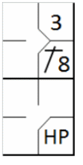
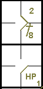

The batter becomes a runner and is entitled to first base without liability to be put out (provided he advances to and touches first base) when … He is touched by a pitched ball which he is not attempting to hit, unless:
If the ball is in the strike zone when it touches the batter, it shall be called a strike, whether or not the batter tries to avoid the ball. If the ball is outside the strike zone when it touches the batter, it shall be called a ball if he makes no attempt to avoid being touched [OBR 5.05(b)(2)].
The abbreviation used in this case is “HP”. A hit by the pitcher does not count as a time at bat. The ball is dead and no runners may advance unless forced.
Example 23:
When a batter hit by the pitcher forces one or more base runners to advance, their advances are noted followed
by the batting order number of the batter, as we have seen for bases on balls
APPROVED RULING: When the batter is touched by a pitched ball which does not entitle
him to first base, the ball is dead and no runner may advance
[OBR 5.05(b)(2)].
| WBSC | Translation in the scoring tool | Tool |
|---|---|---|
|
 |
/* The first batter hits a hit in center field */ action { batter -> 1B8 } /* The next batter is hit by a legal pitch, he gains first base and the runner advances. */ action { batter -> HP , runner1 -> + } |
 |
In this case also, if the batter refuses to advance to first base he is called out and charged with a time at bat.